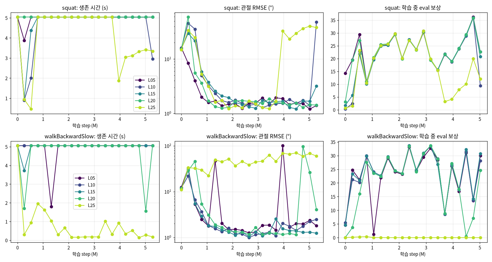

형상별 모션 트래킹 점검 · 발 미끄러짐
형상 1 개 × 모션 1 개마다 PPO 정책 하나 (v7 전문가 설정: 동시 환경 32, 5.24M step, 미끄러짐 감점 없음. 넘어지면 감점 없이 조기 종료, step 보상 ≥ 0). 외란 없이 모션 처음부터 끝까지 실행. 영상: A1 레퍼런스(왼쪽)와 TT 트래킹(오른쪽)을 같은 장면(바닥·조명·카메라 동일)에 나란히 배치.

L05 · 다리 짧은 형상 (허벅지·종아리 -5 %)
허벅지 0.190 m · 종아리 0.166 m (몸통 0.30 m) · E = [0.5, 0.5, 0.5, 0.55, 0.55, 0.5, 0.5, 0.5, 0.5, 0.442, 0.442, 0.5, 0.5]
| 모션 | 생존 (실행/모션 길이) | 발 미끄러짐 (m/s) | 레퍼런스 미끄러짐 | 관절 RMSE (°) | 몸통 위치 RMSE (cm) | 접지 일치 | 이동 비율 (실제/레퍼런스) | 레퍼런스 무리 프레임 |
|---|---|---|---|---|---|---|---|---|
| squat | ○ 5.0/5.0 s | 0.019 | 0.000 | 1.4 | 0.9 | 1.00 | 2.21 (0.01 m) | 0 % |
| walkBackwardSlow | ○ 5.1/5.1 s | 0.043 | 0.014 | 1.8 | 2.2 | 0.95 | 1.03 (0.93 m) | 0 % |
L10 · 다리 짧은 형상 (허벅지·종아리 -10 %)
허벅지 0.180 m · 종아리 0.158 m (몸통 0.30 m) · E = [0.5, 0.5, 0.5, 0.6, 0.6, 0.5, 0.5, 0.5, 0.5, 0.383, 0.383, 0.5, 0.5]
| 모션 | 생존 (실행/모션 길이) | 발 미끄러짐 (m/s) | 레퍼런스 미끄러짐 | 관절 RMSE (°) | 몸통 위치 RMSE (cm) | 접지 일치 | 이동 비율 (실제/레퍼런스) | 레퍼런스 무리 프레임 |
|---|---|---|---|---|---|---|---|---|
| squat | × 3.0/5.0 s | 0.165 | 0.000 | 48.0 | 11.7 | 0.69 | -2.40 (0.01 m) | 0 % |
| walkBackwardSlow | ○ 5.1/5.1 s | 0.054 | 0.014 | 2.5 | 6.4 | 0.93 | 0.94 (0.88 m) | 0 % |
L15 · 다리 짧은 형상 (허벅지·종아리 -15 %)
허벅지 0.170 m · 종아리 0.149 m (몸통 0.30 m) · E = [0.5, 0.5, 0.5, 0.65, 0.65, 0.5, 0.5, 0.5, 0.5, 0.325, 0.325, 0.5, 0.5]
| 모션 | 생존 (실행/모션 길이) | 발 미끄러짐 (m/s) | 레퍼런스 미끄러짐 | 관절 RMSE (°) | 몸통 위치 RMSE (cm) | 접지 일치 | 이동 비율 (실제/레퍼런스) | 레퍼런스 무리 프레임 |
|---|---|---|---|---|---|---|---|---|
| squat | ○ 5.0/5.0 s | 0.025 | 0.001 | 3.2 | 2.3 | 0.97 | 0.39 (0.01 m) | 0 % |
| walkBackwardSlow | ○ 5.1/5.1 s | 0.050 | 0.013 | 1.2 | 1.5 | 0.97 | 0.98 (0.83 m) | 0 % |
L20 · 다리 짧은 형상 (허벅지·종아리 -20 %)
허벅지 0.160 m · 종아리 0.140 m (몸통 0.30 m) · E = [0.5, 0.5, 0.5, 0.7, 0.7, 0.5, 0.5, 0.5, 0.5, 0.267, 0.267, 0.5, 0.5]
| 모션 | 생존 (실행/모션 길이) | 발 미끄러짐 (m/s) | 레퍼런스 미끄러짐 | 관절 RMSE (°) | 몸통 위치 RMSE (cm) | 접지 일치 | 이동 비율 (실제/레퍼런스) | 레퍼런스 무리 프레임 |
|---|---|---|---|---|---|---|---|---|
| squat | ○ 5.0/5.0 s | 0.019 | 0.001 | 1.4 | 0.7 | 1.00 | 2.10 (0.01 m) | 0 % |
| walkBackwardSlow | ○ 5.1/5.1 s | 0.095 | 0.012 | 4.1 | 10.2 | 0.80 | 0.93 (0.78 m) | 0 % |
L25 · 다리 짧은 형상 (허벅지·종아리 -25 %)
허벅지 0.150 m · 종아리 0.131 m (몸통 0.30 m) · E = [0.5, 0.5, 0.5, 0.75, 0.75, 0.5, 0.5, 0.5, 0.5, 0.208, 0.208, 0.5, 0.5]
| 모션 | 생존 (실행/모션 길이) | 발 미끄러짐 (m/s) | 레퍼런스 미끄러짐 | 관절 RMSE (°) | 몸통 위치 RMSE (cm) | 접지 일치 | 이동 비율 (실제/레퍼런스) | 레퍼런스 무리 프레임 |
|---|---|---|---|---|---|---|---|---|
| squat | × 3.3/5.0 s | 0.032 | 0.001 | 38.1 | 27.5 | 0.87 | 107.57 (0.00 m) | 0 % |
| walkBackwardSlow | × 0.2/5.1 s | 2.104 | 0.012 | 59.8 | 5.4 | 0.39 | 0.94 (0.03 m) | 0 % |
발 미끄러짐 = 접지한 발 중심의 월드 수평 속도 평균. 레퍼런스 미끄러짐도 같은 방식. 이동 비율 = 실제 몸통 이동을 레퍼런스 이동 방향으로 투영한 값 / 레퍼런스 이동 거리 (1 = 같은 거리). 주황 배경 = 레퍼런스에서 발로 낼 수 없는 힘이 필요한 프레임이 5 % 넘는 모션 (물리적으로 무리). ←/→ 키로 페이지 이동.